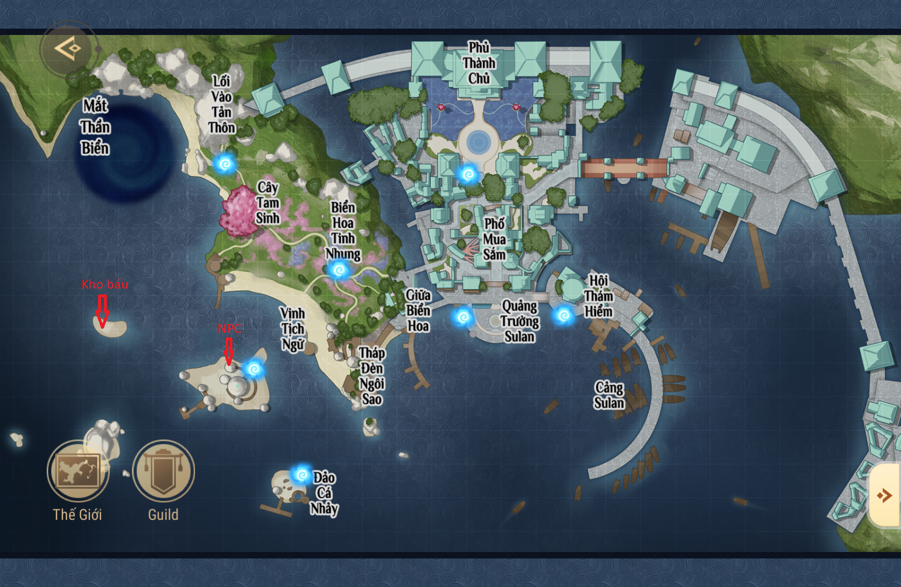
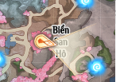
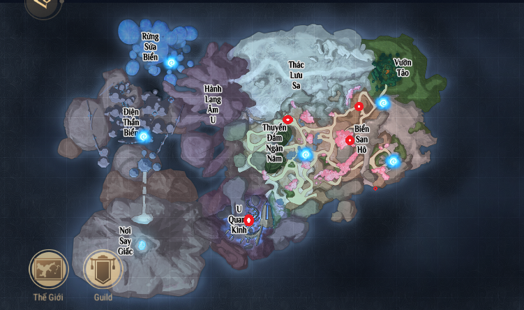

 Săn báu Sulan(Cảng Sulan):Dưới
Tháp đèn ngôi saocó 2 hòn đảo nhỏ, giữa 2 hòn đảo có 1 điểm sáng, hãy đến đó để đào.
 Tiên sinh dạy học:Sau khi làm xong 3 nhiệm vụ
Tiên sinh dạy học:Sau khi làm xong 3 nhiệm vụ Săn báu Tô Lan(Trong thành, trên biển, cảng), đi thư phòng đối thoại với ông Lương (692.432), đi theo ông Lương ra sau nhà sẽ nhận nhiệm vụ, lại đi gác chuông đối thoại để hoàn thành. Ước hẹn lúc nhỏ:Nhận nhiệm vụ ở npc
Hương lan, chọn tìm hiểu du khách. Nhiệm vụ sẽ dẫn bạn đến Npc
Linh Nhi, Linh Nhi sẽ nhờ bạn tìm người họ Nam, đến dưới gác chuông tìm npc
Nam Quang(574.442), sau đó quay lại báo với Linh Nhi, cuối cùng đến map Karstwald, đến dưới cây đào tìm Linh Nhi để hoàn thành nhiệm vụ. Vật thần bí:Sau khi đã nhận nhiệm vụ, đến nhà kho phía tây Sulan(815.305), đứng trước cửa gõ cửa 3 lần, sau đó trả lời mật hiệu
Trong thành Sulan có 3 Hoa Linh đang nhảyđể hoàn thành. Thi tù tì:Đến tìm
Fan cuồng tù tì[Nạp lần đầu](574.383) để bắt đầu oẳn tù tì. Đối thủ tiếp theo là
Fan cuồng tù tì[Ngôi sao](573,401). Sau đó là
Fan cuồng tù tì[Bậc thầy](556.417). Chiến thắng hắn sẽ cho 1 nhiệm vụ tìm npc bên bờ biển.
Đến nơi học câu cá(Bờ gỗ ở đảo cá nhảy), đứng phía trên bồ đoàn bên cạnh npc
Sườn Mâychọn động tác "Ngồi", sau đó đợi 3 phút qua 3 cảnh quay, sẽ được npc Sườn Mây trao tặng bí kíp chiến thắng.
Quay lại chỗ Fan cuồng tù tì[Bậc thầy]. Nhìn qua nóc nhà đối diện sẽ thấy 1 thiếu nữ đang ngồi (
Fan cuồng tù tì[Hạng 1](579.410)), sử dụng khinh công để lên khiêu chiến. Trang sức thất lạc:Đến Biển hoa tinh nhung tìm npc
Triều Hòa(413.399) để nhận nhiệm vụ. Sau khi nhận, dùng biến thân biến thành Thảo Tinh, đến vị trí (399.377) tìm
Quái Cỏ, đối thoại để nhận vật phẩm, lần lượt tới lui để hoàn thành nhiệm vụ. Tài sản hiệp hội:Trong hiệp hội có 7 cái rương gỗ. Gồm 2 rương ở hai bên cầu thang, 2 rương ở trên gác két sắt. Trên lầu, 1 rương ở trong phòng Hải Minh Nguyệt, 1 rương ở trên cầu thang cạnh Tần Thiếu Sư, một rương ở sau bức màng đối diện Tần Thiếu Sư, cần khinh công để nhảy vào. Tình yêu hư vô: Theo nhiệm vụ đến vị trí, đổi thoại với npc nữ
Tô Hiểu(688.351) cạnh sông, sau đó dùng camera Thám Linh soi vào cây và chụp, sau đó đối thoại với npc để hoàn thành. Cảnh đẹp vào sách: Nhiệm vụ đều có hướng dẫn vị trí, hãy đến nơi để chụp hình. Thiếu nữ Tịch tộc: Đến tế đàn ở
Mắt thần biển, vái lại tượng 3 lần để nhận nhiệm vụ, sau đó đi gặp
Huyên Nhi(404.257), sử dụng tính năng phát đoạn âm thanh, chọn phát
Khúc Cực Lạcđể làm Huyên Nhi bớt đau buồn. Sau đó đổi thoại với Huyên Nhi để hoàn thành nhiệm vụ.
Nếu có vật phẩm
Ngọc Hồn Biển nứt vỡHuyên Nhi sẽ giúp khôi phục(Làm xong Săn Báu Sulan sẽ có). Thám hiểm động: Tìm npc Tiểu Tiểu ở Tản Thôn (158. 213) để nhận nhiệm vụ, sau đó biến thành cua xanh để đi vào hang động ở Sulan(115.115) và mở rương. Quay lại tìm npc để hoàn thành. Châu báu vỡ vụn: Nhận nhiệm vụ sau khi đối thoại với Ông Lương, đến bến cảnh đối diện quán Lăng Ba tìm ngư dân, sau đó đến Mắt Thần Biến tìm
Hàn Đức, đối thoại để hoàn thành nhiệm vụ. Bản sắc Tịch Ngữ:Sau khi hoàn thành
Săn báu Sulan(Thủy Triều)giao tiếp với Tịch Tộc Thông để nhận vật sưu tầm. Lời mời của Hoài Nhu: Đến giữa tế đàn Hắc Đế(Karstwald 1200.820) dùng động tác "Ngồi", sẽ nhận nhiệm vụ. Hoàn thành nhiệm vụ sẽ có lịch trình mới
Đứa trẻ mất tích. Sau khi hoàn thành nhiệm vụ này, trao đổi với Hoài Nhu để nhận vật phẩm thu thập. Npc Hoài Nhu còn có thể đổi điểm kỹ năng thám hiểm. Đứa trẻ mất tích:Tìm
Trưởng Trấn Triệu Khang Niên(977.689), tìm
Chu Hàng(778.618), đến Giếng nước (707,658), sẽ nhận được vòng tay tinh vân.
Trở về tìm Hoài Nhu ở nhiệm vụ
Lời mời của Hoài Nhuđể báo cáo. Cuối cùng là thông qua phó bản Thần Miếu-khó để hoàn thành. Tầm bảo kỳ binh: Tìm
Nhà thám hiểm mới(Sulan 469.201) để nhận. Sau đó lần lượt tìm các nhân vật.
Salotte(Sulan 468.153, cần dùng thám linh để nhìn thấy)
Giáo Trời Xanh(Biển Tịch Duyên 1879.916) là 1 cây thương trong 1 cái lọ dưới đáy biển 
Đi vào hang bên cạnh giáo trời xanh, dùng Thám linh chụp túi quà, mở túi quà và đi theo cá vàng.
Đi theo cá vàng mở rương gặp Salotte, sau đó lại đi theo cá vàng nhặt 4 san hô và hoàn thành nhiệm vụ. Xin chú ý lượng ô xi vì ở dưới nước. Giấc mơ sứa biển: Nhận nhiệm vụ ở Npc
Áng Mây Bay(155.285), hắn giao nhiệm vụ đến biển Tịch Duyên, ngay điểm dịch chuyển dưới
Biển San Hôcó npc nhiệm vụ. Sau khi đối thoại, quay về tìm đồ đệ Áng Mây Bay, hắn sẽ cho 4 vật phẩm. Đến Biển Tịch Duyên tìm sứa ở 4 vị trí.

Ở mỗi chỗ điểm đỏ sẽ tìm thấy 1 con sứa, đối thoại tất cả để hoàn thành. Sau khi hoàn thành, quay lại tìm Áng Mây Bay để để đến bước kế tiếp.
Áng Mây Bay bảo bạn chụp hình, hãy đến Vườn Tảo ở biển Tịch Duyên để chụp, sau đó sẽ có chuỗi nhiệm vụ. Click nhiệm vụ để làm theo. Thiếu niên cưỡi sóng: Đến Sulan 691.459 tìm A Ngưu nhận nhiệm vụ. Đến Sulan 365.317 nhặt khăn tay bên bờ biển. Sau đó tìm Tiểu Giác(372.387), đối thoại và nhặt vật phẩm. Tìm Công nhân lắm lời ở tiệm thủ công, Nhà buôn gian xảo ở tiệm thời trang, Thực khác đau bụng ở cạnh Kình Ba Khách, Công nhân mệt mõi ở bến tàu gần hiệp hội. Sau đó nhiệm vụ sẽ tự tìm đường.